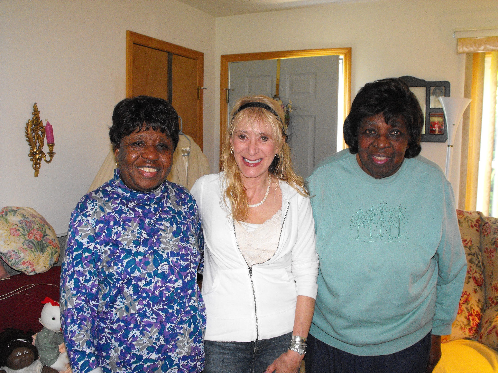

The people behind the place
Memory gives a place its meaning.
Family memories from the Gumby family and the Ward/Smith family’s connection to the cemetery helped neighbours see what this place holds. Those memories are a starting point for understanding the people, faith and community who shaped it.
Share a family story